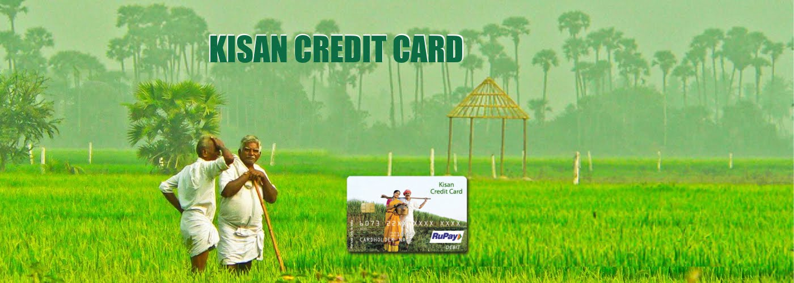

Pradhan Mantri Kisan Samman Nidhi Yojana is an initiative of the Government of India with 100% central sponsored scheme. As per this scheme aprox 120 million small and marginal farmers of India with less than two hectares of landholding will get up to Rs. 6,000/- per year in three installment of Rs. 2,000/- as a minimum income support. PM-Kisan scheme or PM Kisan Samman Nidhi Yojana has become operational since 1st December 2018.
MorePrime Minister Narendra Modi launched a pension scheme for welfare of all small & marginal farmers. Under this scheme about 5 crore marginalised farmers will get a minimum monthly pension of up to Rs.3000/- on attaining the age of 60. All those farmers who fall in the age group of 18 - 40 years are eligible to apply for the scheme. As per this scheme, the farmers will be required to make a monthly contribution of Rs 55 to 200, depending on their age of entry in the Pension Fund till they reach the retirement date i.e. 60 years.
MorePradhan Mantri Fasal Bima Yojana is an actuarial premium based scheme for their crops. As per the scheme farmer has to pay maximum premium of 2 percent for Kharif, 1.5 percent for Rabi food & oilseed crops and 5 percent for annual commercial or horticultural crops and the remaining part of the actuarial or bidded premium is equally shared by the Central & State Government. An important purpose of the scheme is to facilitate quick claims and hassle free settlement.
MoreKisan Credit Card scheme is another important Government scheme for the welfare of farmers that provides farmers with timely access to credit for their harvest. Initially Kisan Credit Card scheme was introduced in the year 1998 to provide short-term formal credit to the farmers. Under this scheme, farmers are given short-term loans for purchasing equipment and other expenses as well on a very nominal rate of interest. Most of the Banks like SBI, HDFC, ICICI, Axis are offering KCC.
MorePradhan Mantri Krishi Sinchai Yojana was launched on 1 July 2015 to achieve the aim ‘Har Khet Ko Paani’ and to provide end-to end solutions in irrigation supply chain, viz. water sources, distribution network & farm level applications. PMKSY focuses on creating sources for assured irrigation. This also aims to create protective irrigation by harnessing rain water at micro level through ‘Jal Sanchay’ and ‘Jal Sinchan’. Below are some important components of this scheme;
MoreIn the year 2005-06, Department of Animal Husbandry, Dairying & Fisheries (DAHD&F) Government of India launched a pilot scheme called as “Venture Capital Scheme for Dairy & Poultry”. This scheme aimed at extending support for setting up small dairy farms and other components to bring structural changes in this sector. Later on, DAHD&F changed its name to 'Dairy Entrepreneurship Development Scheme' (DEDS). After this the revised scheme came into operation with effect from 1st September, 2010.
More